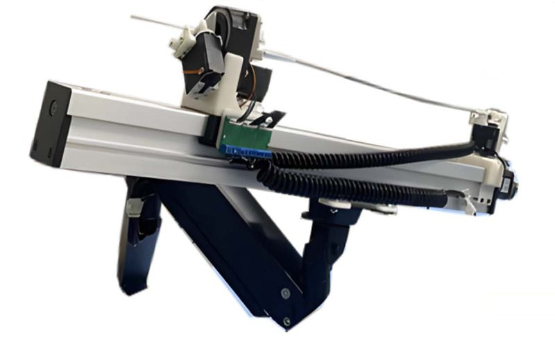

Academic bedside robots · xmu_mei2025
XMU wire robot
Xiamen University vascular interventional robot for sim-trained guidewire navigation

1 / 4


- Family
- Academic bedside robots (academic)
- Devices
- guidewire and microcatheter (mei2025_transferring Sec. IV-B)
- Degrees of freedom
- 3 modules: guidewire delivery, guidewire rotation, microcatheter linear motion (mei2025_transferring Sec. IV-B)
- Push
- Friction rollers
- Twist
- Rotating drive unit
- Tested up to
- Phantom
- Sim-to-real
- Yes — A controller or perception model trained in simulation ran on this robot.
Testing
- Highest level
- Phantom
- What was tested
- transparent vessel model ('ex vivo vascular model'), 4 targets; RL agent 40 deliveries per target, interventional surgeon 20 per target, replayed expert sequence as control (mei2025_transferring Sec. IV-B, Table III)
- Key numbers
- RL success 82.50 / 87.50 / 82.50 / 72.50% (targets A-D) vs surgeon 100% and expert-clone replay 0%; mean steps 41.61 / 36.8 / 45.94 / 54.10 vs 31 / 26.95 / 34.05 / 41.65; actions push/pull 10 mm, rotate 45 deg, wait 0.5 s (Tables II-III); simulation success 99.30 / 99.26 / 98.34% over three training stages (Sec. IV-A); HX8-U28 bus servos for friction wheels, ASM34AK steppers, ESP32 control
Mechanism
- Push (translation)
- friction-roller
- Twist (rotation)
- other: rotating platform driven along the axis by the friction-wheel module (mei2025_transferring Sec. IV-B)
- Device range
- N.R.
- Target anatomy
- coronary paths (virtual tasks built from DSA images); transparent ex vivo vessel model in a water tank
Sensing and interface
- Force sensing
- none reported
- Leader and haptics
- none (discrete commands from agent or surgeon)
- Imaging
- camera above a transparent model (no X-ray)
- Sterility
- N.R.
Size
- Footprint (mm)
- N.R.
- Mass (kg)
- N.R.
Simulation
- Simulation model
- 2D Pymunk guidewire-vessel simulation built from DSA path reconstructions (mei2025_transferring Sec. III-A)
- Sim-trained controller
- yes, phantom level: agent trained only in 2D simulation and run zero-shot on the robot with camera images re-rendered to the simulator style (mei2025_transferring Sec. IV-B, full)
- Studies on this robot
- 2025 · FreezeSeg2RL: Frozen Segmentation Pretraining for Reinforcement Learning On Vascular Interventional Robot Autonomous Delivering — sim 56.1% ARCADE tasks, 44.8% in-vitro-model tasks (simulated, Table 4); robot 85%, 80%, 80%, 70% (human 100/95/100/95; BC 0%); without data augmentation 25%, 15%, 15%, 5%
- 2025 · Transferring Virtual Surgical Skills to Reality: AI Agents Mastering Surgical Decision-Making in Vascular Interventional Robotics — sim 99.30, 99.26 and 98.34 % across three training stages (not the hardware targets); robot 82.5 / 87.5 / 82.5 / 72.5 % (surgeon 100 %, replayed surgeon commands 0 %)
Versions
- Lineage
- 2024/2025 robot + Pymunk-trained RL agent (mei2025_transferring, full); same group and hardware table in FreezeSeg2RL (mei2025_freezeseg2rl) and EVEGARS (PRCV 2026, see A6 notes); 2020: Xiamen University (Y. Zhao) remote-controlled TACE robot with force sensing and bending feedback (Zhou, Mei, ... Zhao 2020, Micromachines 11:805) (Belikov 2024 Fig. 6 ZH2; Duan 2023 Table 1 row 13) (belikov2024_evolution; duan2023_progress; li2024_design; zhao2022_remote)
Sources
- Transferring Virtual Surgical Skills to Reality: AI Agents Mastering Surgical Decision-Making in Vascular Interventional Robotics · IEEE/ASME Transactions on Mechatronics, 2025 · doi:10.1109/tmech.2024.3420954 [mei2025_transferring]
- FreezeSeg2RL: Frozen Segmentation Pretraining for Reinforcement Learning On Vascular Interventional Robot Autonomous Delivering · PRICAI 2025: Trends in Artificial Intelligence, 2026 · doi:10.1007/978-981-95-7072-0_25 [mei2025_freezeseg2rl]
- Evolution and current state of robotic catheters for endovascular surgery: A comprehensive review · Engineering Science and Technology, an International Journal, 2024 · doi:10.1016/j.jestch.2024.101789 [belikov2024_evolution]
- Technical and Clinical Progress on Robot-Assisted Endovascular Interventions: A Review · Micromachines, 2023 · doi:10.3390/mi14010197 [duan2023_progress]
- Robotic Systems Design in Endovascular Treatment · IEEE Transactions on Medical Robotics and Bionics, 2024 · doi:10.1109/tmrb.2024.3377374 [li2024_design]
- Remote vascular interventional surgery robotics: a literature review · Quantitative Imaging in Medicine and Surgery, 2022 · doi:10.21037/qims-21-792 [zhao2022_remote]
Notes
- Notes
- A6 lists the EVEGARS/FreezeSeg2RL sim2real rows on the same hardware; this TMECH paper is the one that describes the robot.
This record
- Read level
- full
- Picture
- mei2025_transferring Fig. 1(c) robot cut-out by the authors (native raster p. 2) ↗ — licence: publisher copyright; grade B
- Picture changes
- native extract; cropped; three annotation fragments (blue arrow, 'Delivery in Real-world' text, blue bar) on plain white background painted white, none touching the robot; not upscaled
- Found by
- gap: Gap searches for robots the other searches missed.
- Data
- JSON · YAML:
records/robots/xmu_mei2025.yaml - Correction
- Suggest a correction [repository not created yet]